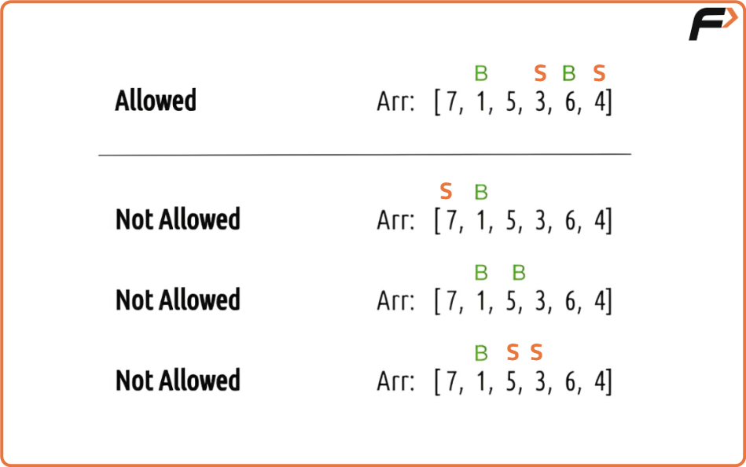
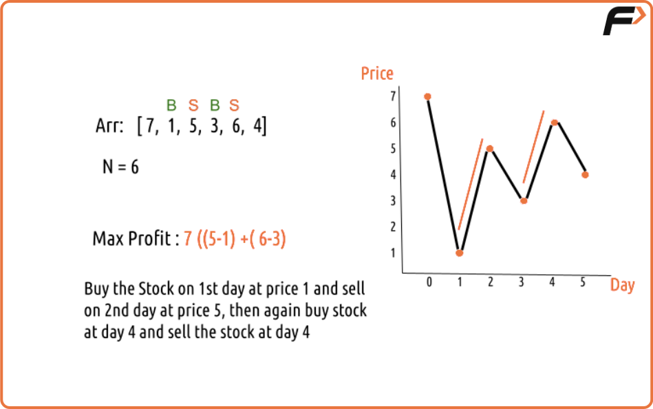
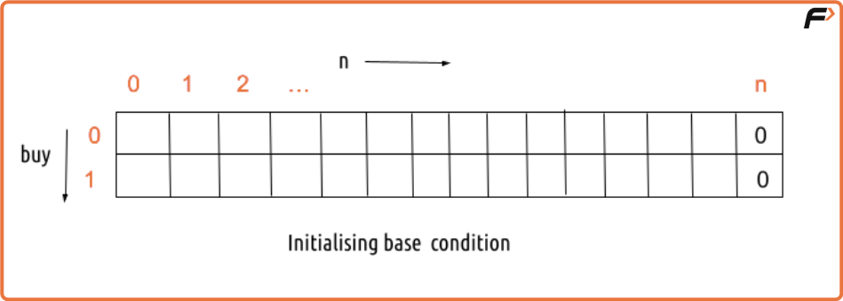
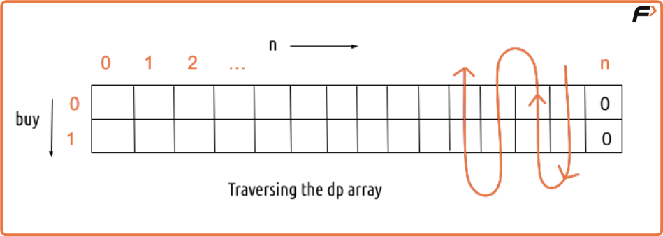
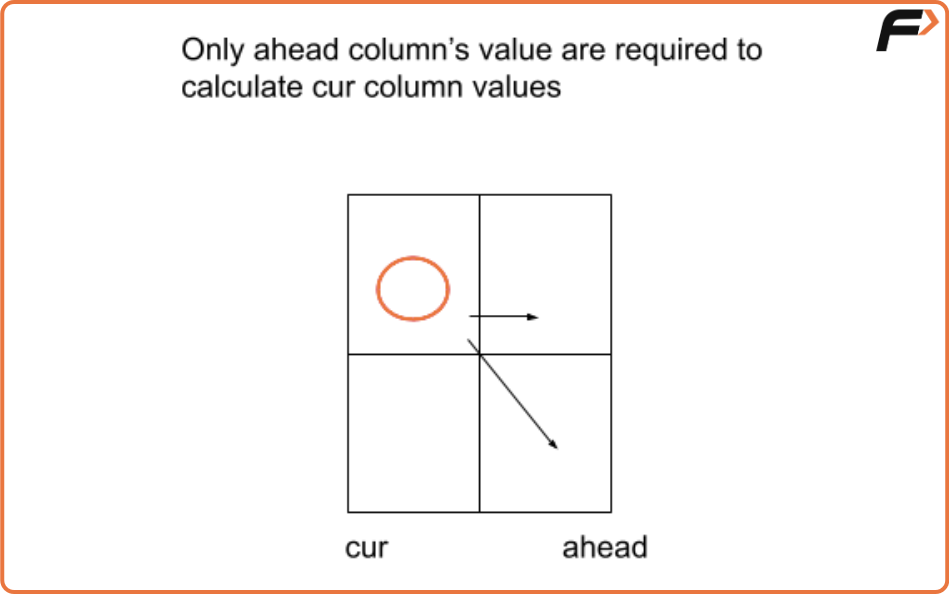

Buy and Sell Stock - II | (DP -36)
Problem Statement:
Buy and Sell Stock - II
We are given an array Arr[] of length n. It represents the price of a stock on ‘n’ days. The following guidelines need to be followed:
- We can buy and sell the stock any number of times.
- In order to sell the stock, we need to first buy it on the same or any previous day.
- We can’t buy a stock again after buying it once. In other words, we first buy a stock and then sell it. After selling we can buy and sell again. But we can’t sell before buying and can’t buy before selling any previously bought stock.

Examples
Example 1:
Array={7, 1, 5, 3, 6, 4}
N=6
MaxProfit=7 as ((5-1) + (6-3))
Explaination: Buy the stock on 1st day at price 1 and sell the stock on 2nd day at the price of 5. Then again buy stock at day 3 and sell the stock at 4


Disclaimer: Here is the practice link to help you assess your knowledge better. It's highly recommend trying to solve it before looking at the solution.
Memoization Approach
Algorithm
Intuition
Every day, we have two options: either do nothing or make a buy/sell action to increase profit. Since we must check all possibilities to get the maximum profit, we use recursion.
Represent the problem
Think of the problem as decisions for each day. Keep track of whether we are allowed to buy or need to sell. We calculate the maximum profit possible from that day onward.
Try all choices
- If we are allowed to buy:
- Option 1: Skip the day and move to the next.
- Option 2: Buy the stock (profit decreases now because we spend money) and then move to the next day.
- If we are holding a stock and can sell:
- Option 1: Skip the day and move to the next.
- Option 2: Sell the stock (profit increases now because we earn money) and then move to the next day.
Return the maximum
For every day, choose the option that gives the highest profit.
Base Case
- If we have reached the end of the trading days, return 0 as no more profit can be made.
Memoization
- Create a table to store already calculated results.
- Before solving for a day, check if it is already stored; if yes, use it directly.
- If not, calculate it using recursion and store it for future use.
Code
#include <bits/stdc++.h>
using namespace std;
class StockProfit{
long getAns(long *Arr, int ind, int buy, int n, vector<vector<long>> &dp) {
// Base case: When we reach the end of the array, there are no more decisions to make.
if (ind == n) {
return 0;
}
// If the result for this state has already been calculated, return it
if (dp[ind][buy] != -1) {
return dp[ind][buy];
}
long profit = 0;
if (buy == 0) { // We can buy the stock
profit = max(0 + getAns(Arr, ind + 1, 0, n, dp), -Arr[ind] + getAns(Arr, ind + 1, 1, n, dp));
}
if (buy == 1) { // We can sell the stock
profit = max(0 + getAns(Arr, ind + 1, 1, n, dp), Arr[ind] + getAns(Arr, ind + 1, 0, n, dp));
}
// Store the calculated profit in the DP table and return it
return dp[ind][buy] = profit;
}
long getMaximumProfit(long *Arr, int n) {
// Create a DP table to memoize results
vector<vector<long>> dp(n, vector<long>(2, -1));
if (n == 0) {
return 0;
}
long ans = getAns(Arr, 0, 0, n, dp);
return ans;
}
int main() {
int n = 6;
long Arr[n] = {7, 1, 5, 3, 6, 4};
return 0;
}
Complexity Analysis
Time Complexity: O(N*2). There are N*2 states therefore at max ‘N*2’ new problems will be solved and we are running a for loop for ‘N’ times to calculate the total sum
Space Complexity: O(N*2) + O(N). We are using a recursion stack space(O(N)) and a 2D array ( O(N*2)).
Tabulation Approach
Algorithm
To change the memoization method into a tabulation method, we create a table (dp array) of the same size. We fill it step by step instead of using recursion.
- First, we make a table with rows for each day and two columns for the two possible states (buy or sell). Initially, all values are set to zero.
- We then set the base condition: for the last day (when no more trading is possible), both buying and selling give zero profit.
- Next, we use two loops:
- The outer loop moves from the second last day back to the first day.
- The inner loop goes through both states (buying and selling).
- For every day and state, we fill the table using the same choice logic as in the memoization method (choosing the maximum profit between doing nothing and making a transaction).
- Finally, the answer is stored in the first cell, which gives the maximum profit starting from the first day when buying is allowed.


Code
#include <bits/stdc++.h>
using namespace std;
class StockProfit {
long getMaximumProfit(long *Arr, int n) {
// Create a DP table to memoize results
vector<vector<long>> dp(n + 1, vector<long>(2, -1));
// Base condition: When we have no stocks left, the profit is 0.
dp[n][0] = dp[n][1] = 0;
long profit;
// Loop through the array in reverse order
for (int ind = n - 1; ind >= 0; ind--) {
for (int buy = 0; buy <= 1; buy++) {
if (buy == 0) { // We can buy the stock
profit = max(0 + dp[ind + 1][0], -Arr[ind] + dp[ind + 1][1]);
}
if (buy == 1) { // We can sell the stock
profit = max(0 + dp[ind + 1][1], Arr[ind] + dp[ind + 1][0]);
}
dp[ind][buy] = profit;
}
}
// The maximum profit is stored in dp[0][0] after all calculations
return dp[0][0];
}
int main() {
int n = 6;
long Arr[n] = {7, 1, 5, 3, 6, 4};
// Call the getMaximumProfit function and print the result
cout << "The maximum profit that can be generated is " << getMaximumProfit(Arr, n);
return 0;
}Complexity Analysis
Time Complexity: O(N*2). Reason: There are two nested loops that account for O(N*2) complexity.
Space Complexity: O(N*2). We are using an external array of size ‘N*2’. Stack Space is eliminated.
Space Optimization Approach
Algorithm
If we look closely at the pattern,
Each value depends only on the next day’s values.
This means we don’t need to keep the entire table. We can store only two rows (current and next), making the solution more memory-efficient.
- We start by setting the "next day" row with the base condition (profit is 0 when no more days are left).
- Then we run loops to fill the current day’s values.
- Instead of referring to the entire table, we replace future references with the "next day" row and current references with the "current day" row.
- After finishing calculations for the current day, we copy it into the "next day" row for the next iteration.
- Finally, the first cell of the current row gives the maximum profit.

Code
#include <bits/stdc++.h>
using namespace std;
class StockProfit {
long getMaximumProfit(long *Arr, int n) {
// Create two arrays to store the profits ahead of the current position (0 for not holding, 1 for holding)
vector<long> ahead(2, 0);
vector<long> cur(2, 0);
// Base condition: When there are no stocks left, the profit is 0.
ahead[0] = ahead[1] = 0;
long profit;
// Loop through the array in reverse order
for (int ind = n - 1; ind >= 0; ind--) {
for (int buy = 0; buy <= 1; buy++) {
if (buy == 0) { // We can buy the stock
profit = max(0 + ahead[0], -Arr[ind] + ahead[1]);
}
if (buy == 1) { // We can sell the stock
profit = max(0 + ahead[1], Arr[ind] + ahead[0]);
}
cur[buy] = profit;
}
ahead = cur; // Update the "ahead" array with the current values
}
// The maximum profit is stored in cur[0] after all calculations
return cur[0];
}
int main() {
int n = 6;
long Arr[n] = {7, 1, 5, 3, 6, 4};
// Call the getMaximumProfit function and print the result
cout << "The maximum profit that can be generated is " << getMaximumProfit(Arr, n);
return 0;
}Complexity Analysis
Time Complexity: O(N*2). Reason: There are two nested loops that account for O(N*2) complexity
Space Complexity: O(1). Reason: We are using an external array of size ‘2’.